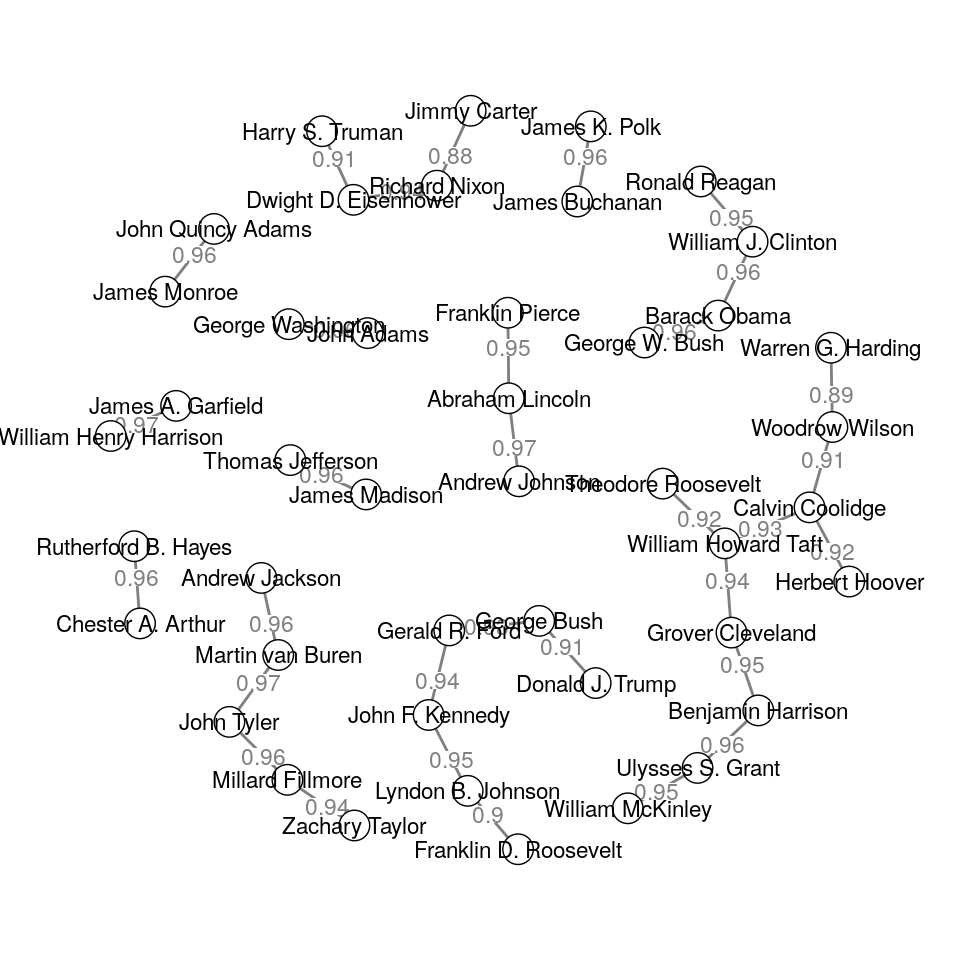
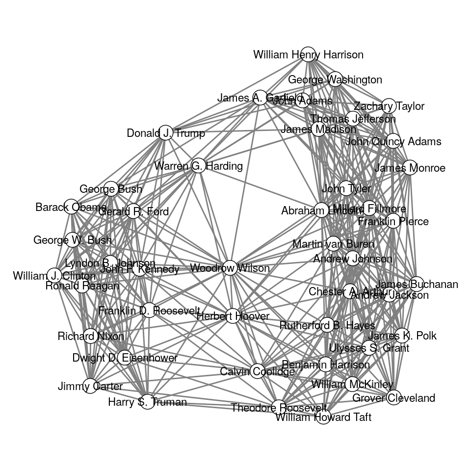
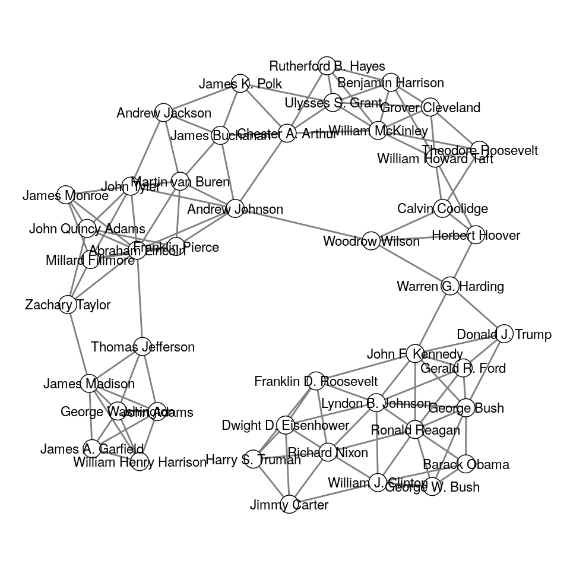
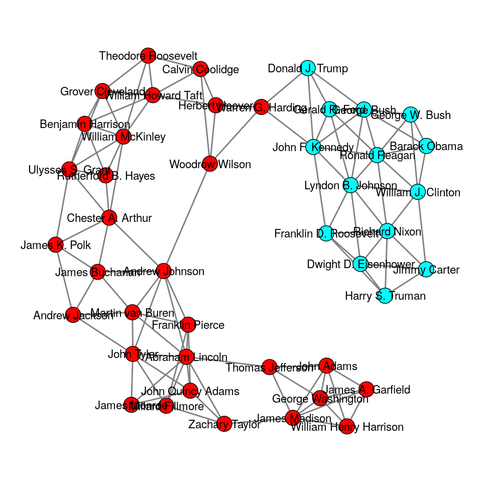

clustRviz Details
John Nagorski
2018-06-29
Introduction
The clustRviz package intends to make fitting and visualizing CARP and CBASS solution paths an easy process. In the Getting Started vignettee we provide a quick start guide for basic usage, fitting, and plotting. In this vignette, we build on the basics and provide a more detailed explanation for the variety of options available in clustRviz.
Background
The starting point for CARP the Convex Clustering problem.
\[ \underset{{\boldsymbol{U}}}{\textrm{minimize}} \;\; \frac{1}{2} \| {\boldsymbol{X}} - {\boldsymbol{U}} \|_F^2 + \lambda \sum_{ l < m} w_{l,m} \| {\boldsymbol{u}}_l - {\boldsymbol{u}}_m \|_2 \]
The above can be solved via ADMM
\[ \underset{{\boldsymbol{U}}, {\boldsymbol{V}}}{\text{minimize}}\;\; \frac{1}{2} \| {\boldsymbol{X}} - {\boldsymbol{U}} \|_2^2 + \lambda \sum_{l<m} w_{l,m} \| {\boldsymbol{v}}_{l,m} \|_2 \\ \text{subject to}\;\;\;\;\; {\boldsymbol{u}}_{l} - {\boldsymbol{u}}_{m} = {\boldsymbol{v}}_{l,m}, \;\; \forall l,m \]
Convex clustering is traditionally solved by iteratively applying ADMM updates until convergence.
This must be done for each \(\lambda_k\) which is costly.
Preprocessing and Inputs
While the CARP and CBASS functions provides several reasonable default choices for weights, algorithms, etc, it is important to know their details if one wishes to compute more customized clustering choices. Here we examine several of the inputs to CARP and CBASS, as well as their preprocessing technqiues
While we will still use the CARP and CBASS functions, we will also encounter serveral other package functions along the way.
As before, we will use the presidential speech dataset to illustrate the variety of options available. Let’s begin by loading our package and the dataset.
library(clustRviz)
data("presidential_speech")
Xdat <- presidential_speech
obs.labels <- rownames(Xdat)
var.labels <- colnames(Xdat)
Xdat[1:5,1:5]
#> amount appropri british cent commerci
#> Abraham Lincoln 3.433987 2.397895 1.791759 2.564949 2.708050
#> Andrew Jackson 4.248495 4.663439 2.995732 1.945910 3.828641
#> Andrew Johnson 4.025352 3.091042 2.833213 3.332205 2.772589
#> Barack Obama 1.386294 0.000000 0.000000 1.386294 0.000000
#> Benjamin Harrison 4.060443 4.174387 2.302585 4.304065 3.663562
head(obs.labels)
#> [1] "Abraham Lincoln" "Andrew Jackson" "Andrew Johnson"
#> [4] "Barack Obama" "Benjamin Harrison" "Calvin Coolidge"
head(var.labels)
#> [1] "amount" "appropri" "british" "cent" "commerci"
#> [6] "commission"Again our speech data consists of log-transformed word counts from speech found at url.
Preprocessing
Normalization
An important first choice before clustering is whether to center and scale our observations.
Centering should always be done.
The choice of scaling is left to the user discression, but should typically be applied if measurements are a vastly different scales.
In the case of the presidental speech dataset, all variables are of the same type and so we do not scale our data matrix
# Centering data before computing the CARP solution path
Xdat.preprocessed <- scale(Xdat,center=TRUE,scale=FALSE)In the CARP function this preprocessing is done via the X.center and X.scale arguements. If the data is pre-processed outside of CARP, as is the case here, these options may be set to FALSE
Similarly, the CBASS function also requires that data preprocessed prior usage. Because CBASS clusters both observations and variables, here centering is done by subtracting away the global mean of our data matrix.
# Subtracting global mean before computing the CBASS solution path
Xdat.bi <- Xdat
Xdat.bi.preprocessed <- Xdat - mean(Xdat)Dimension Reduction
While not directly addressed by CARP or CBASS, high dimensional measurements can present a challenge for clustering methods.
Owing to the “curse of dimensionality”, high dimensional measurements may deliver sub-optimal performance for distance-based methods generally.
As such, performing dimensionality reduction before applying CARP
may result in more interpretable clusters.
We leave the choice of dimensionality reduction to the end-user, but still recommend the reduced feature set be pre-processed as described above.
For the purpose of visualuization, CARP addresses the problem of high dimenstionality by visualizing the principal components of the data by default.
Weights
Weights are arguably one of the most important inputs to both CARP and CBASS.
As we can see from the optimization probelms above, weights impart apriori preference concerning which observations (and variables in the case of CBASS) should be fused together.
This important feature allows us to incorportate domain knowledge, if available.
In the absense of domain knowledge, however, weights can easily be constructed via the data itself.
One might first consider simply using a set of uninformative weights, \(w_{l.m} = 1\)
While perhaps not appearent at first, such weight choices can also greatly affect the computation time of both CARP and CBASS (and certainly Convex Clustering).
To see this note that in the Convex Clustering problem above the regularization term contains \(\binom{n}{2}\) summands, drastically increasing computations as \(n\) increases.
Computations can be reduced by making the majority of weights zero and greatly reducing the number of summands.
Here we detail clustRviz’s default weight choices, as well as how weights can be constructed manually.
By default CARP and CBASS assume no prior domain knowledge and construct distance-based weights via a gaussian kernel:
\[
w_{l,m} = \exp\{ -\phi \|{\boldsymbol{x}}_l - {\boldsymbol{x}}_m \|^2_2 \}
\] Given a choice of \(\phi\) (discussed in more detail below), an initial set of weights can be constructed via DenseWeights function. In the case of presidential speech data for example,
dense.weights <- clustRviz:::DenseWeights(X = Xdat.preprocessed,phi=1e-3)
head(dense.weights)
#> [1] 0.9053890 0.9676079 0.5474781 0.8777638 0.8041133 0.9350156As the name suggests DenseWeights computes \(w_{l,m}\) for all pairs of observations.
For the presidents data, with \(n=44\) observations, this results in a vector of length \(\binom{44}{2} = 956\).
length(dense.weights)
#> [1] 946The weights are returned in lexicographical order, namely \({\boldsymbol{w}} = (w_{1,2},w_{1,3},\dots,w_{l,m},\dots,w_{n-1,n} )\)
The value of \(\phi\) can have a marked effect on the weights.

Dense weights for different choices of phi
The choice of \(\phi\) determines variance of the weights.
Generally, choices of \(\phi\) which result in higher variance weights tend to be more informative. A simple method for finding a reasonable choice of \(\phi\) is a basic grid search. For example:
phi.vec <- 10^(-4:4)
sapply(phi.vec,function(phi){
var(clustRviz:::DenseWeights(X=Xdat.preprocessed,phi = phi))
}) %>%
which.max() %>%
phi.vec[.]
#> [1] 0.01Additionally, DenseWeights allows for the specification of alternative distance measures
Depending on the dataset, alternative metrics to traditional euclidean distance may result in more informative clustering solutions.
dense.weights.can <- clustRviz:::DenseWeights(X = Xdat.preprocessed,phi=1e-5,method = 'canberra')
Dense weights with Canberra distance
Distance-based weights can be made sparse by only fusing together nearest neighbors.
For a given observations \(l\) we consider its \(k\) nearest neighbors \(\textrm{ne}_k(l)\).
Given a pair of observations \(l,m\), we set their corresponding weight, \(w_{l,m}\), to zero if either is not amongst the other nearest neighbors. Specifically,
\[ \tilde{w}_{l,m} = w_{l,m} {\boldsymbol{1}}_{\textrm{ne}_k(l)}(m) {\boldsymbol{1}}_{\textrm{ne}_k(m)}(l) \] where \(w_{l,m}\) is our original dense weight values and \({\boldsymbol{1}}_{A}(x)\) denotes the indicator function of the set \(A\).
For a specifid value of \(k\), a sparse vector of \(k\) nearest neighbor weights can be generated via the SparseWeights function:
k.neighbors <- 5
clustRviz:::SparseWeights(
X=Xdat.preprocessed,
dense.weights = dense.weights,
k = k.neighbors) -> sparse.weightsIn the case of \(k=\) 5 above, the number of non-zero weight values (and hence the number of summands in our original objective) has been reduced from \(\binom{44}{2} = 956\) to
sum(sparse.weights!=0)
#> [1] 144Computationally, it is tempting to set \(k\) small and ensure fast compuatation.
Setting \(k\) too small, however, can potentially prevent observations from fusing, regardless of the amount of regularization.
In order to verify that our sparse set of weights allows for the eventual fusion of all observations we can examine its graphical representation.
The function PlotWeightGraph displays the fusion graph of our observations induced by the support of our weight set.
The fusion graph displays each observation as a vertex, and connects two observation with an edge if their corresponding weight is non-zero.
Such connections between observations indicate their ability fuse into a common cluster, given large enough regularization.
Below we consider the extreme case of \(k=1\), which while computationally fast presents an immediate difficulty.
clustRviz:::PlotWeightGraph(
weights = clustRviz:::SparseWeights(
X=Xdat.preprocessed,
dense.weights = dense.weights,
k=1
),
nobs = nrow(Xdat.preprocessed),
edge.labels = TRUE,
obs.labels = obs.labels,
vsize=3,
label.scale=FALSE,
label.cex=.7,
repulsion=.9)
Examining the graph above, we note that the number of connected components is strictly greater than one. As such, regardless of the number of CARP iteratations (and the associated regularization increases) it will not be possible fuse all observations into a single cluster. Such extreme weight choices should typically be avoided as they not only hinder the agglomorative nature of CARP and CBASS, but also lead to biased and less interpretable solution paths. result in.
At the other extreme, large values of \(k\) again result in long computation time and bring little to no improvement on the resulting solution sequence; an example of such an overly dense graph can be seen below.
clustRviz:::PlotWeightGraph(
weights = clustRviz:::SparseWeights(
X=Xdat.preprocessed,
dense.weights = dense.weights,
k=15
),
nobs = nrow(Xdat.preprocessed),
edge.labels = FALSE,
obs.labels = obs.labels,
vsize=3,
label.scale=FALSE,
label.cex=.7,
repulsion=.9)
In order to provide a reasonable choice regarding weight sparsity, the function MinKNN may be used to find a balance between computational efficiency and poor clustering performance. MinKNN takes as its arguement an initial set of dense weights and returns the smallest \(k\) such the graph induced by the support of the resulting set of sparse weights contains exactly one connected component. For our current vector of weights we have:
clustRviz:::MinKNN(
X = Xdat.preprocessed,
dense.weights = dense.weights
) -> k.min
k.min
#> [1] 4Using the k.min value above we may compute the corresponding sparse weight vector and view its resulting graph below.
clustRviz:::SparseWeights(
X = Xdat.preprocessed,
dense.weights = dense.weights,
k = k.min
) -> sparse.weightsclustRviz:::PlotWeightGraph(
weights = sparse.weights,
nobs = nrow(Xdat.preprocessed),
edge.labels = FALSE,
obs.labels = obs.labels,
vsize=3,
label.scale=FALSE,
label.cex=.7,
repulsion=.9)
We can see that the resulting graph offers a compromise between the two extremes. By default both CARP and CBASS use the value returned by MinKNN to produce sparse sets of weights. While slightly larger values of \(k\) can be used, it is not recommended to pass below this threshold for the reasons stated above.
Fitting
clustRviz aims to make it easy to compute the CARP and CBASS solution paths, and to quickly begin exploring the results. To this end, many reasonable choices regarding both preprocessing and inputs disucussed above are made by default, allowing for solution path to be computed from the raw data alone. In the case of CARP, for example, we may fit the compute the solution path for the presidents data via the CARP function:
CARP(
X=Xdat,
obs.labels = obs.labels
) -> carp.fitOnce completed, we can examine a brief summary of the fitted object
print(carp.fit)
#> CARP Fit Summary
#> Number of Observations: 44
#> Number of Variables: 75
#> Pre-processing: center
#> Weights: RBF Kernel, phi = 0.001, k = 4
#> Algorithm: CARP-VIZ
#> Visualizations: Static DendStatic PathInteractive Dend/Path
#> Raw Data:
#> amount appropri british cent commerci
#> Abraham Lincoln 3.433987 2.397895 1.791759 2.564949 2.708050
#> Andrew Jackson 4.248495 4.663439 2.995732 1.945910 3.828641
#> Andrew Johnson 4.025352 3.091042 2.833213 3.332205 2.772589
#> Barack Obama 1.386294 0.000000 0.000000 1.386294 0.000000
#> Benjamin Harrison 4.060443 4.174387 2.302585 4.304065 3.663562The output above displays characteristics of our data, such as sample size and number of variables, and also gives a preview of the raw input. Additionally, the summary provides information regarding both data pre-processing and weight computations. From the above we see that CARP has by default: (i) centered our data, (ii) computed distance-based weights using a gaussian kernel with \(\phi=.001\), and (iii) created a sparse set of weights using \(k=4\) nearest neighbors. Finally, the summary also provides information about the algorithm, here CARP-VIZ, as well as the available visualizations.
While CARP’s default choices work well in most scenarios, customized inputs can also be provided. For example, choices regrarding preprocessing and weight computations discussed above can quickly be incorporated:
CARP(
X=Xdat,
obs.labels = obs.labels,
X.center=TRUE,
X.scale=TRUE,
phi = 1e-5,
weight.dist = 'canberra',
k = 5
) -> carp.fit.customIndeed, in the case strong apriori information concerning clusters is available, distance-based weight computations may be avoided altogether and user-specified weights given directly via the weights arguement.
CBASS solutions can be fit in a similar manner:
CBASS(
X=Xdat,
obs.labels = obs.labels,
var.labels = var.labels
) -> cbass.fitAnd display its output:
cbass.fit
#> amount appropri british cent commerci
#> Abraham Lincoln 3.433987 2.397895 1.791759 2.564949 2.708050
#> Andrew Jackson 4.248495 4.663439 2.995732 1.945910 3.828641
#> Andrew Johnson 4.025352 3.091042 2.833213 3.332205 2.772589
#> Barack Obama 1.386294 0.000000 0.000000 1.386294 0.000000
#> Benjamin Harrison 4.060443 4.174387 2.302585 4.304065 3.663562Solutions
carp.clustering <- Clustering(carp.fit,k = 2)table(carp.clustering$clustering.assignment)
#>
#> cl1 cl2
#> 30 14clustRviz:::PlotWeightGraph(
weights = sparse.weights,
nobs = nrow(Xdat.preprocessed),
edge.labels = FALSE,
obs.labels = obs.labels,
vsize=3,
color=rainbow(2)[as.numeric(str_extract(carp.clustering$clustering.assignment,"(\\d)+"))],
label.scale=FALSE,
label.cex=.7,
repulsion=.9)
head(carp.clustering$cluster.means)
#> cl1 cl2
#> [1,] 3.247043 1.8627224
#> [2,] 3.226682 2.0425014
#> [3,] 2.312455 0.5157932
#> [4,] 2.055121 0.7925161
#> [5,] 2.743924 0.9780746
#> [6,] 2.380273 0.1980421carp.clustering <- Clustering(carp.fit,percent = .25)
clustRviz:::PlotWeightGraph(
weights = sparse.weights,
nobs = nrow(Xdat.preprocessed),
edge.labels = FALSE,
obs.labels = obs.labels,
vsize=3,
color=rainbow(ncol(carp.clustering$cluster.means))[
as.numeric(str_extract(carp.clustering$clustering.assignment,"(\\d)+"))
],
label.scale=FALSE,
label.cex=.7,
repulsion=.9)
cbass.clustering <- Clustering(cbass.fit,percent = .8)Visualizations
Saving
saveviz(
carp.fit,
file.name = 'path_dyn.gif',
plot.type = 'path',
image.type = 'dynamic'
)saveviz(
carp.fit,
file.name = 'carp_dend_static.png',
plot.type = 'dendrogram',
image.type = 'static'
)saveviz(
cbass.fit,
file.name = 'cbass_heat_dyn.gif',
plot.type = 'heatmap',
image.type = 'dynamic'
)